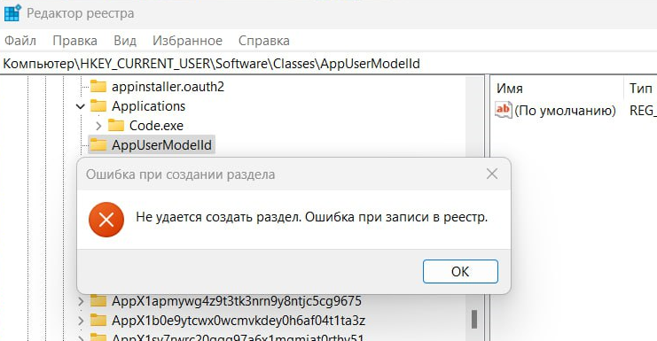
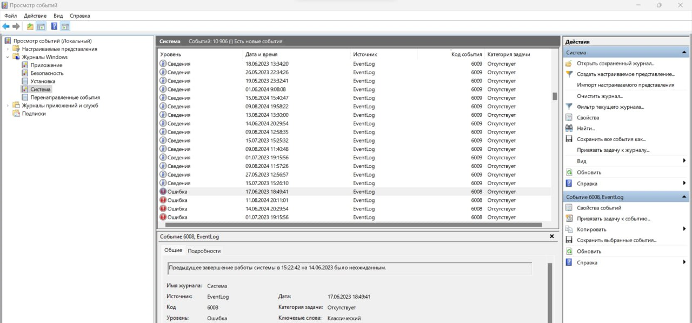

Обратите внимание: В данной статье указано решение данной проблемы только для версии 1.0.4 и выше. Если подобная ошибка происходит на версиях ниже 1.0.4, то свяжитесь с поддержкой Связаться с поддержкой
Данная ошибка происходить из-за нескольких факторов
1. В системе есть приложение, создающее временный ключ по пути
"Компьютер\HKEY_CURRENT_USER\Software\Classes\AppUserModelId\" в реестре.
Для проверки следует перейти в реестр по указанному пути и попытаться создать новый раздел

Если вы увидели данное сообщение - значит в системе есть приложение, постоянно создающее данный раздел как "временный".
Проверьте содержимое раздела AppUserModelId. Если там есть подраздел NotifyIconGeneratedAumid_{цифры}, то полностью удалите раздел AppUserModelId, после чего создайте его заного.
После указанных действий ОБЯЗАТЕЛЬНО выполните перезагрузку ПК
2. Реестр системы поврежден. В таком случае следует проверить события Откройте поиск на панели задач -> введите "Просмотр событий"

Откройте Просмотр событий (Локальный)/Журналы Windows/система и отсортируйте про Уровню сообщения. Если вы видите ошибку с кодом 6008, то следует перезагрузить ПК.
Если это не помогло, то посетите страницу по решению проблем с реестром в Windows
Для чего нужно создание ключа в реестре?
Новая система отображения уведомлений требует регистрации приложения для отображения иконки и названия на уведомлении. Ранее использовался метод, создающий множество иконок в трее подробнее см. в "Иконки в трее", что являлось не удобным. Текущий метод не создает иконок в трее